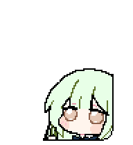
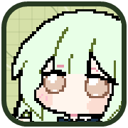

面无表情的「好女孩」
还原社区二创梗图里那张呆萌淡定的扑克脸。
故意省去了嘴巴线条，全靠眼神变化和手里的黄瓜抢戏。
无论发生什么都保持那张波澜不惊的脸，手里却忙着浇水、收瓜、递礼袋。
在下方点选动作试玩，或者直接把这只像素小睦领回你的桌面。
正在加载动画

点击右侧按钮切换动作，或开启跟随模式和她对视。

若叶睦 · 好女孩像素款 / v1.0（WAKABA MUTSUMI）
兼容 Codex、PetDex 及支持 Sprite v2 的桌宠客户端。
默认仅安装文件，不覆盖你当前启用的桌宠。
还原社区二创梗图里那张呆萌淡定的扑克脸。
故意省去了嘴巴线条，全靠眼神变化和手里的黄瓜抢戏。
把「祥 移动」「不会长久的」等名场面与种瓜、送瓜、被退货的日常做成 9 组像素动画与像素气泡。
回到上方试玩完整保留从 54×54 像素参考图到 Sprite v2 全图集的绘制代码与设计图纸，均可在 GitHub 仓库翻阅。
查看制作过程角色出自 BanG Dream! Ave Mujica 官方角色页（若叶睦 / Wakaba Mutsumi）。本作为同人像素创作，造型参考社区流传的「好女孩」二创梗图与 huolizi 发布的 54×54 像素画作。
动作气泡中的「祥 移动」「不会长久的」「太好了呢」源自原作动画台词及衍生梗；「好女孩？」「又退货？」「不许退货」「瓜在长了」则围绕睦种黄瓜、送黄瓜的剧情二创而成。详见仓库内的来源记录。
网页试玩直接加载 v1.0 正式 Sprite v2 图集，实际桌面端的动作切换频率与注视表现取决于所用的桌宠客户端。